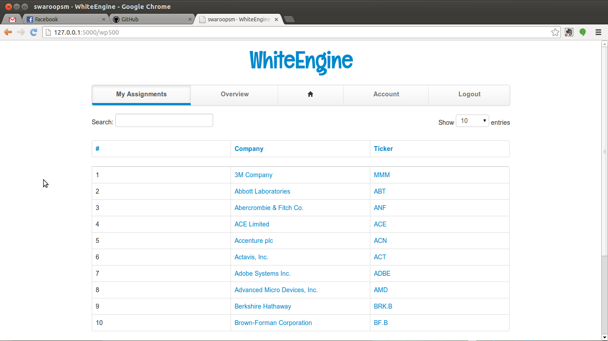

Knowledge Process Outsourcing (KPO) & publishing
company in the area of company intelligence and Business Continuity. Our
outsourcing solutions include company profiling for research organizations and
business information companies
Company Profiling
Basic Data
Company Summary
Executive Data
Products and Services Offered
Related companies
Services
Whitepapers
Provides information about companies with customers, competitors, suppliers & products.
Publications
Books and Papers published by Ribhu Info Solutions.
Turn-Key Projects
Provide need based information solution and suport to its customers in various business areas.
Project Overview
The application mines and extracts the most relevant data so as to reduce the
manual work involved in the data collection and sorting. Also generation of the
WhitePapers that is in a PDF format is also taken care by the application and thus
reducing manual labor.
Existing System
Collection of data of an individual company and searching them manually
from various resources from the web.
Excel sheet as a means of storage.
Manual Review and Cleaning of data.
Use of Excel Macros for report generation.
Convert the report into PDF
PDF uploads to website.
Proposed System
One System, All Activities
Use of Web Browser as the central system, to operate from anywhere.
Quick Navigation of different Companies' information.
High Quality PDF generation.
Software & Hardware Requirements
Hardware Requirements
Pentium 4 or equivalent processors
512 MB RAM
30 GB HDD
EVG/VGA Colour Monitor. 1024 * 768
Keyboard & Mouse
Software Requirements
Unix like OS(preferably debian or its derivatives)
Python, Javascript
Apache
Flask
MongoDB
LaTeX
Functionality of the Proposed System
Data Extraction & Parsing
Urllib2: Provides an updated API for using internet resources identified by URLs
BeautifulSoup4: Provides a few simple methods and Pythonic idioms for navigating, searching, and modifying a parse tree: a toolkit for dissecting a document and extracting what you need.
User Creation
The users or the reviewers of the system are created here. It consists of a username and password for a specific user. The password is encrypted using the SHA-1 digest algorithm.
Company Assignments
Here a specific company is assigned to a user. A user gets an equal proportion of
the companies available in the system. Since the stock ticker symbol of each company is unique, the companies assigned for a specific user is stored as an array for each user.
PDF Report Generation
The fields that were mentioned for each company are finally compiled together into neat report. This is done by using LaTeX.
LaTex & Jinja Communication
System DataFlow
Overall System Flow
Report Generation Flow
Screenshots
Login
Dashboard
S & P 500 Companies Assignment

Company Review
PDF Generation
Sample Whitepaper
Conclusion
The project has been of great help to me in gaining valuable information. It has given me a great satisfaction in having designed an application that has importance in real world.